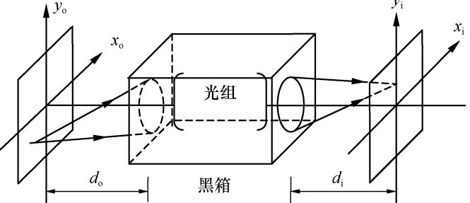
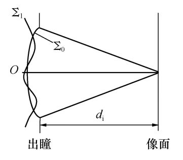

光学成像系统是信息传递系统.
从物面到像面，输出图像的质量完全取决于光学系统的传递特性.
几何光学是在空域研究光学系统的成像规律.
星点法和分辨率法都是归属于空域的评价方法.
与空域分析相平行，还可以在频域中分析光学系统的成像质量.
光学系统是线性系统，且在一定条件下还是线性空不变系统，因而可以利用线性系统理论来研究它的性能.
将输入信息分解成各种空间频率分量，然后考察这些空间频率分量在通过系统的传递过程中，丢失、衰减、相位移动等变化，也就是研究系统的空间频率传递特性，即传递函数.
这显然是一种全面评价光学系统成像质量的方法.
传递函数可由光学系统的设计数据计算得出.
虽然计算传递函数的步骤比较麻烦，检查传递函数的仪器也比较复杂，但是，大容量高速度电子计算机的出现及高精度光电测试技术的发展，使光学传递函数的计算和测量日趋完善，并逐渐得到实际应用.
任何平面物场分布都可以看作为无数小面元的组合，而每个小面元都可看作一个加权的\(\delta\)函数.
系统对光束大小的限制是由系统的孔径光阑决定的，即在考虑了衍射受限系统时，实际上主要是考察孔径光阑的衍射作用.
孔径光阑在物空间所成的像.
孔径光阑在像空间所成的像.
当轴上物点的位置确定后，孔径光阑、入瞳、出瞳由系统元件参数及相对位置决定.
对整个光学系统而言，入瞳与出瞳保持物像共轭关系.
由入瞳限制的物方光束必定能全部通过系统，成为被出瞳限制的像方光束.
下面为这样的系统建立一个普适模型：

如图所示，任意成像系统都可以分成三部分：
对于第二部分的透镜系统，在等晕条件下，可将其作为一个黑箱处理，黑箱两个边端分别是入瞳与出瞳.
只要能确定这个黑箱两个边端的性质，整个透镜组的性质便可确定下来，而不必深究其内部结构.
假定在入瞳与出瞳之间的光的传播可用几何光学来描述，所谓边端性质是指成像光波在入瞳与出瞳平面上的性质.
为了确定系统的脉冲响应，需要知道这个黑箱对点光源发出的球面波的变换作用，即当入瞳平面上输入发散球面波时，出瞳平面透射的波场特性.
对于实际光组，这一边端性质千差万别，但总可以分为两类：
当像差很小或系统的孔径与视场都不大时，实际光学系统就可近似看作衍射受限系统.
此时的边端性质就比较简单，物面上任一点光源发出的发散球面波投射到入瞳上，被光组变换为出瞳上的会聚球面波.
不考虑几何像差，仅考虑系统的衍射限制.
若忽略衍射效应，点物通过系统后将形成一个理想的点像.
一般的衍射受限系统可由若干共轴球面透镜组成，这些透镜既可以是正透镜，也可以是负透镜，且透镜也不一定是薄的.
有像差系统的边端条件为：点光源发出的发散球面波投射到入瞳上，出瞳处的透射波场明显偏离理想球面波，偏离程度由波像差决定.
补充知识阿贝认为衍射效应是由于有限大小的入瞳引起的.
1896年瑞利提出衍射效应来自有限大小的出瞳.
由于一个光曈不过是另一个光曈的几何像，这两种看法是等效的，衍射效应可以归结为：入瞳或出瞳对成像光波的限制.
这里采用瑞利的说法.
物面面元的光振动为单位脉冲（即\(\delta\)函数）时的像场分布函数.
常用\(h(x_o, y_o; x_i, y_i)\)表示，表示物平面上\((x_o, y_o)\)点的单位脉冲通过成像系统后在像平面\((x_i, y_i)\)点产生的光场分布.
一般来说，\(h(x_o, y_o; x_i, y_i)\)既是\(x_o, y_o\)的函数，也是\(x_i, y_i\)的函数.
对于衍射受限系统，在相干照明下传递函数\(H\)只有\(0\)和\(1\)两个值，各种空间成分或者无畸变地通过系统，或者被完全挡掉.
在非相干照明下的光学传递函数\(H\)是非负实函数，即系统只改变各频率成分的对比，不产生相移.
以上结果是无像差的理想情况下得出的.
任何一个实际系统总是有像差的.
像差来源所有这些像差都会对传递函数产生影响，在相干或非相干照明下，往往都是复函数.
系统将对各频率成分的相位产生影响.
在讨论衍射受限系统时，我们通过点扩散函数\(\tilde{h}(x_i, y_i)\)与光曈函数的Fourier变换，最终用光曈函数来描述传递函数.
对于有像差的系统，仍采用这种方法，只是对光曈函数的概念加以推广，然后用广义光曈函数来描述这种有像差系统的传递函数.
为什么要推广？
怎么推广？
衍射受限系统中，单位脉冲\(\delta(\tilde{x}_o, \tilde{y}_o)\)通过系统后透射到光曈上的，是以理想像点为中心的球面波.
对于有像差的系统，不论产生像差的原因如何，其效果都是使光曈上的初设波前偏离理想球面，如图所示.

由于系统有像差，使与O点等相位的各点形成波面\(\Sigma_1\)；若系统无像差，理想波面应该使\(\Sigma_0\).
\(\Sigma_1\)和\(\Sigma_0\)每一点的光程差用函数\(W(x,y)\)表示，其具体形式由系统像差决定，由其引起的相位变化为\(kW(x,y)\).
若定义：
则\(\tilde{h}(x_i, y_i)\)可以看作：复振幅透过率为\(\mathcal{P}(x, y)\)的光曈被半径为\(d_i\)的球面波照明后得到的分布.
这样一来，\(\tilde{h}(x_i, y_i)\)就是广义光曈函数的Fourier变换.
$$\begin{align} \tilde{h}(x_i, y_i) &= \mathcal{F}\{\mathcal{P}(\lambda d_i\tilde{x}, \lambda d_i\tilde{y})\}\\ &= \mathcal{F}\{P(\lambda d_i\tilde{x}, \lambda d_i\tilde{y})e^{ikW(\lambda d_i\xi, \lambda d_i\eta)}\}\\ \end{align}$$ $$\begin{align} H(\xi, \eta) &= \mathcal{P}(\lambda d_i\xi, \lambda d_i\eta)\\ &= P(\lambda d_i\xi, \lambda d_i\eta)e^{ikW(\lambda d_i\xi, \lambda d_i\eta)} \end{align}$$利用施瓦兹不等式，不难证明：
$$|\mathcal{H}(\xi, \eta)|_{有像差} \leq |\mathcal{H}(\xi, \eta)|_{无像差}$$因此像差会进一步降低成像质量.
下面对相干与非相干成像做一些比较，通过这些比较虽然不能得出哪一种成像更好的全面性结论，但对两者之间的联系和某些基本差异的理解会更深入一些，并能根据一些具体情况判断选用哪种照明会更好.
OTF的截止频率是CTF截止频率的两倍.
但这并不意味着非相干照明一定比相干照明好.
这是因为不同系统的截止频率是对不同物理量传递而言的.
对于非相干系统，它是指能够传递的强度呈余弦变化的最高频率.
对于相干系统，是指能够传递复振幅呈周期变化的最高频率.
显然，从数值上对二者做简单比较是不合适的.
但对于二者的最后可观察量都是强度，因此直接对像强度进行比较是恰当的.
下面将会看到，即使比较的物理量一致，要判断绝对的好坏也是困难的.
分辨率是评判系统成像质量的一个重要指标.
非相干成像系统使用的是瑞利分辨判据，用其来表示理想光学系统的分辨率.
对于衍射受限的圆形光曈情况，点光源在像面上产生的衍射斑的强度分布称为艾里斑.
根据瑞利判据，对两个强度相等的非相干点源，若一个点源产生的艾里斑中心恰与第二个点源产生的艾里斑的第一个零点重合，则认为这两个点源刚好能够分辨.
瑞利分辨判据仅适用于非相干成像系统，对于相干成像系统是否能分辨两个点源，需要看它们的相位关系.